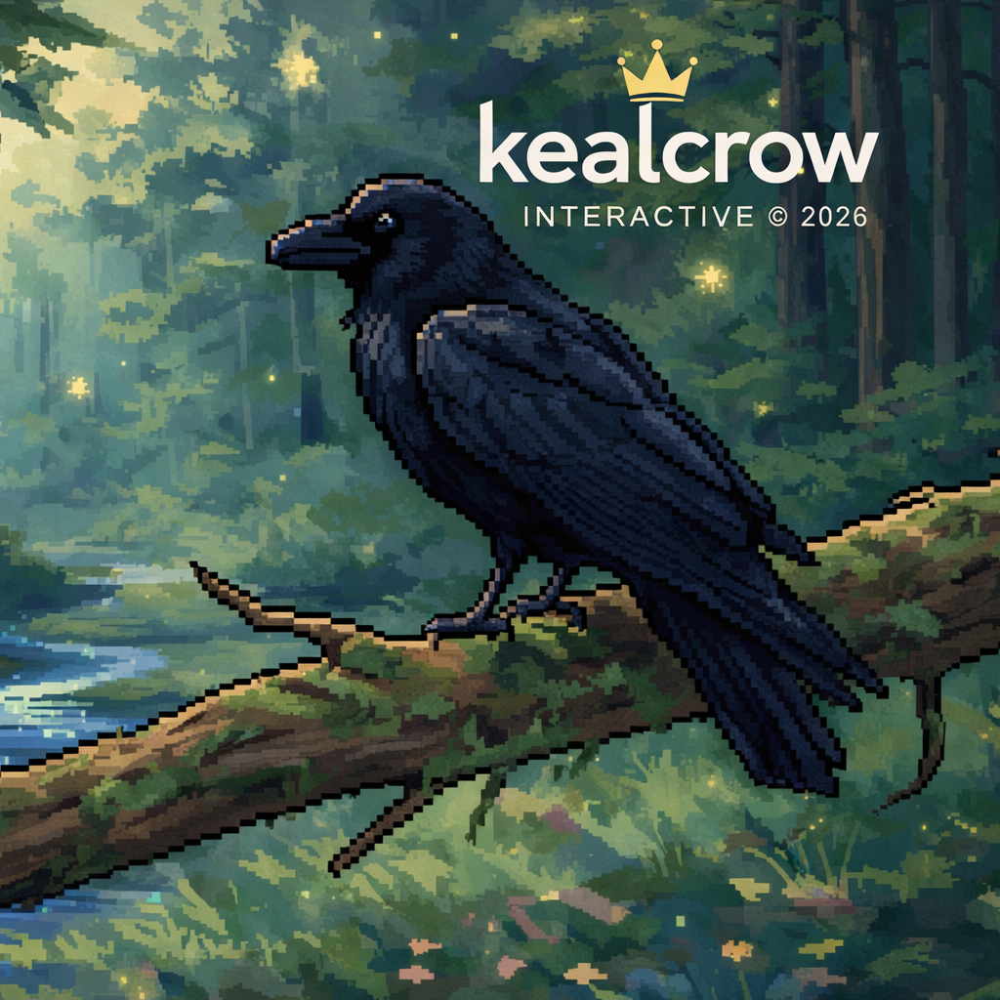
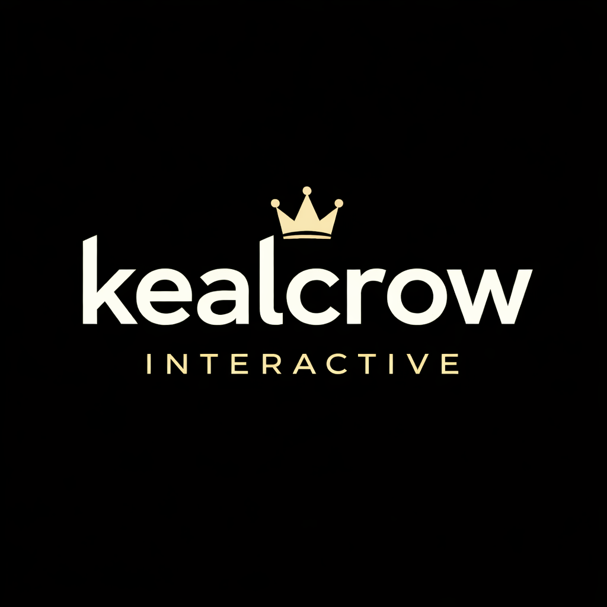
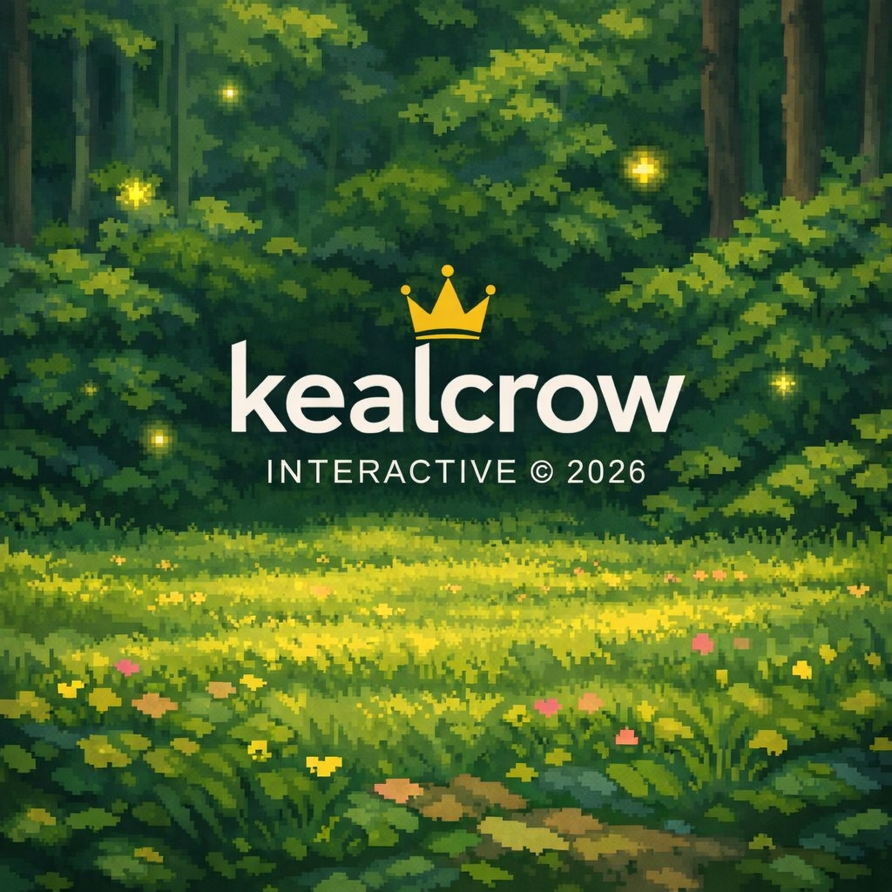
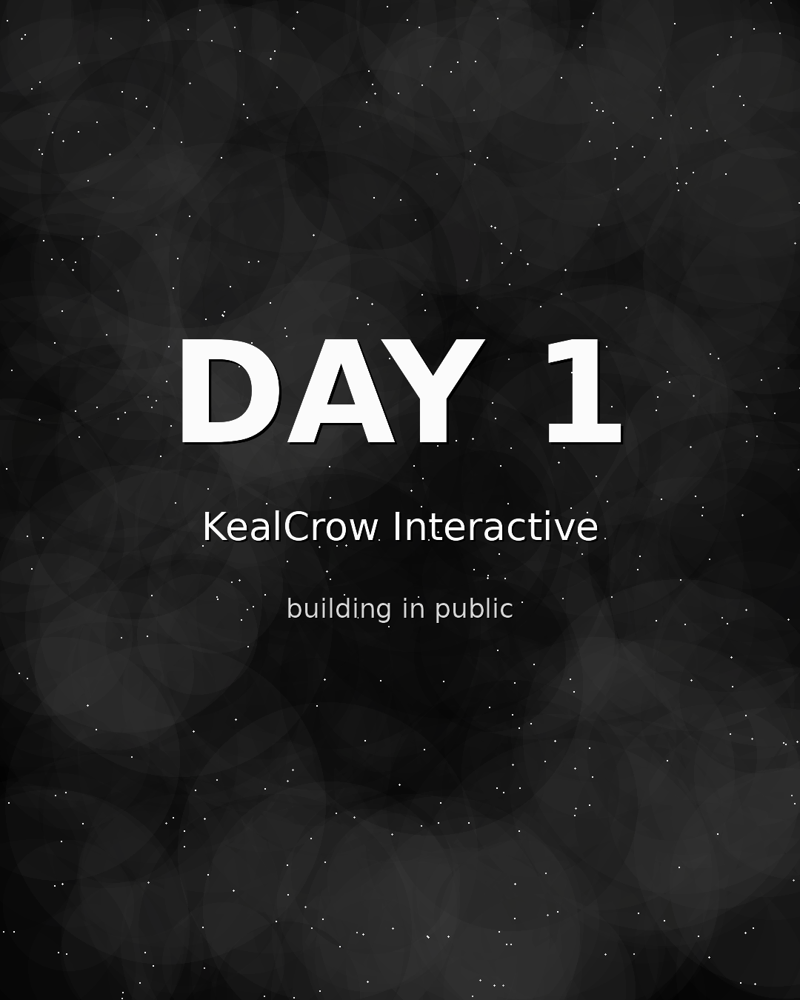

Atmospheric Pixel Art
A visual direction rooted in dense forests, soft light, dark silhouettes, and restrained cinematic composition.
An indie universe in early development
A dark pixel-art universe where the forest remembers, and the crown is never silent.
Creative Vision
KealCrow is being shaped as a narrative-driven pixel-art project with a slow, deliberate atmosphere. Its identity begins with a black bird, a crown, and a forest that feels older than memory.
The goal is to build a credible long-term universe: emotionally precise, visually recognizable, and honest about its early stage.

World Pillars
A visual direction rooted in dense forests, soft light, dark silhouettes, and restrained cinematic composition.
Storytelling designed around fragments, implication, and places that communicate before they explain.
Crow, crown, forest, gold, ruin, and memory form the first language of the world.
The project will grow through visible logs, careful milestones, and transparent early development.
Development Archive
KealCrow begins publicly at Day 1. The archive will document the decisions, revisions, ideas, and technical steps that shape the project over time.
Establish the project identity, define the first visual tone, publish the official repository presence, and prepare the development log structure.
Expand environment studies, refine the symbolic language, and begin documenting lore fragments with production notes.
Explore interaction models, gameplay rhythm, technical scope, and the first internal playable experiments.
Concept Media
These images represent current atmosphere, identity, and concept direction. They are early materials, not final production assets.



Community
KealCrow is in its earliest public phase. Community channels will open gradually as the project develops enough substance for meaningful updates, discussion, and feedback.